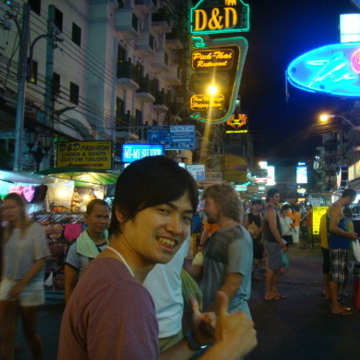
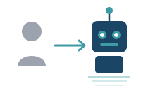
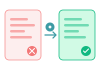
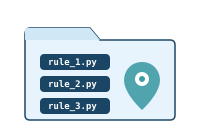
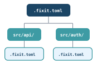
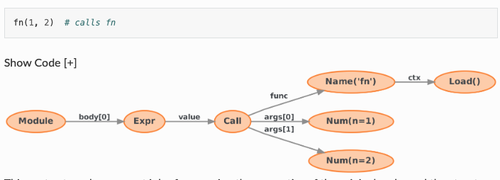
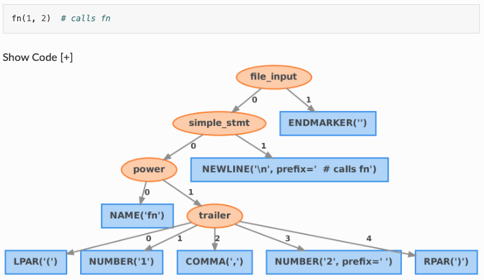
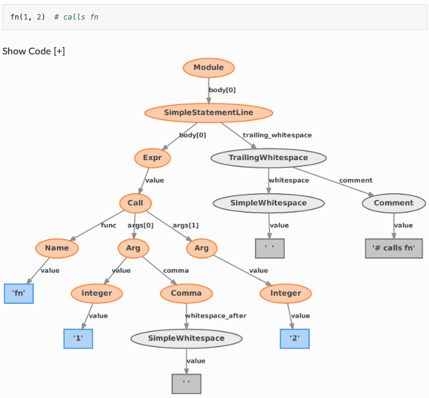

Python Asia 2026

# PR レビューにて... # レビュアーA: 「logging じゃなくて structlog 使ってください」 import logging logger = logging.getLogger(__name__) # レビュアーB: 「あ、それ知りませんでした...」 # レビュアーC: 「前のPRでは指摘されなかったのですが...」
同じ指摘が何度も繰り返される = 自動化のチャンス
コーディング規約を機械的ルールとして定義し、レビューの属人化を防ぐ
組織が定義した「あるべき姿」を自動的にコードベース全体に適用
人間依存のレビュープロセスから、機械検証による自動化へシフト

ruff, flake8, pylint などの汎用Linterは優秀だが...
組織のコーディング規約を強制するには カスタムルールが不可欠
logging → structlog の統一 datetime.now() の直接使用禁止（テスタビリティ確保） requests ではなく社内HTTPクライアントの使用 特定の例外クラスを継承しないカスタム例外の禁止 非推奨の内部APIを呼び出しているコードの検出
libcst ベースの高機能Python Lintフレームワーク。カスタムルールの作成が容易で、自動修正（autofix）機能を標準搭載。
ルール違反を検出して報告
検出箇所を自動で修正

リポジトリ内にルール配置

ディレクトリ毎に設定可能

# .fixit.toml で設定 [fixit] local = ["lint_rules/"] # カスタムルールの配置先 # コマンド実行 $ pip install fixit # インストール $ fixit lint path/to/code.py # Lint実行 $ fixit fix path/to/code.py # 自動修正 $ fixit fix --interactive path/ # 対話的に修正
import libcst as cst import fixit class MyRule(fixit.LintRule): """ルールの説明をここに書く""" MESSAGE = "問題の説明文" def visit_Call(self, node: cst.Call) -> None: """特定のノードを訪問して検査""" # ノードを検査してviolationを報告 self.report(node, message="修正が必要です") def visit_Import(self, node: cst.Import) -> None: """import文を検査""" # replacement を指定すると autofix が有効に self.report(node, replacement=new_node)
Visitor パターン: ツリーの各ノードを巡回しながら検査する
# .fixit.toml - プロジェクトルートに配置 [fixit] # カスタムルールのディレクトリ local = ["lint_rules/"] # 有効にするルール enable = ["fixit.rules", "lint_rules"] # 無効にするルール disable = ["fixit.rules:CompareSingletonPrimitivesByIs"] # Python バージョン python-version = "3.14"
サブディレクトリに別の .fixit.toml を置くことで 階層的な設定 が可能
.fixit.toml
AST (Abstract Syntax Tree) と CST (Concrete Syntax Tree)

AST はコードの「意味」だけを抽出し、「見た目」を捨てる
# 元のコード import logging # Legacy logging # アプリケーションのメインロガー logger = logging.getLogger(__name__)
AST で変換すると...
import structlog logger = structlog.get_logger()
コメントが消失し、チームが残したメモや意図が失われてしまう

CST はコードを「完全に復元可能な形」で表現する
ただし lib2to3 は Python 3.13 で削除済み → 後継が必要
CST で変換すると...
import structlog # Legacy logging # アプリケーションのメインロガー logger = structlog.get_logger()
コメント・空白・フォーマットを保持したまま安全に変換
lib2to3 の課題を解決する、Meta（Instagram）発の CST ライブラリ
with_changes()

大規模コードベースで自動リファクタリングを行う際、コメントやフォーマットが消えるのは許容できない。 LibCSTを使うことで、既存のコードスタイルを維持しながら確実に変換でき、差分レビューもクリーンになる。
# CST ベースの変換なら diff が最小限 - import logging + import structlog # アプリケーションのメインロガー ← コメント保持 - logger = logging.getLogger(__name__) + logger = structlog.get_logger()
変更箇所だけが差分に出る = レビューが楽になる
ASTベースだとファイル全体が書き換わり、差分が膨大になることも
libcst の Visitor パターン、CSTノード構造の理解が必要
# libcst のノード構造を理解する必要がある cst.Import( names=[ cst.ImportAlias( name=cst.Attribute( value=cst.Name("logging"), attr=cst.Name("getLogger"), ), ), ], )
visit_*
leave_*
「logging.getLogger の使用を structlog.get_logger に置き換えてほしい」
libcstのVisitorパターンに基づいたLintRule クラスを自動生成
fixit fix コマンドで一括自動修正を実行
libcstの深い知識がなくても、自然言語でやりたいことを説明するだけで、Fixitルールが自動生成される。これにより、チーム全員がコーディング規約の策定と強制に参加できる。
# プロンプトに含めると精度が上がる情報 1. fixit.LintRule の基本構造（テンプレート） 2. libcst の主要ノード型の一覧 3. 変換の Before / After 例 4. エッジケースの具体例 5. 既存の Fixit ルールの実装例
AI はパターンマッチが得意 → 良い例を与えるほど精度が上がる
既存の Fixit ビルトインルールを参考例として渡すのも効果的
Python標準の logging モジュールは柔軟だが、構造化ログの出力が煩雑。structlog はキーバリュー形式のログを簡潔に記述でき、JSON出力やログパイプラインとの親和性が高い。多くの組織が移行を進めている。
Before:
import logging logger = logging.getLogger(__name__) logger.info("User logged in", extra={"user_id": user_id})
After:
import structlog logger = structlog.get_logger() logger.info("User logged in", user_id=user_id)
import文の変更 + 関数呼び出しの変更を 両方 自動で行いたい
以下のFixitルールを生成してください: 1. import logging を import structlog に変換 2. logging.getLogger(__name__) を structlog.get_logger() に変換 3. 既存のコメントやフォーマットは保持すること ルールは fixit.LintRule を継承し、 visit_ImportFrom / visit_Call メソッドで検出、 自動修正（autofix）も実装してください。
import libcst as cst from libcst import matchers as m import fixit class ReplaceLoggingWithStructlog(fixit.LintRule): """logging モジュールの使用を structlog に置き換えるルール""" MESSAGE = "logging の代わりに structlog を使用してください" TAGS = {"migration", "logging"}
シンプルなクラス定義とメタデータの宣言
def visit_Import(self, node: cst.Import) -> None: """import logging を検出して import structlog に変換""" if isinstance(node.names, (list, tuple)): for i, alias in enumerate(node.names): if isinstance(alias.name, cst.Name) \ and alias.name.value == "logging": new_names = list(node.names) new_names[i] = alias.with_changes( name=cst.Name("structlog") ) new_node = node.with_changes( names=new_names ) self.report(node, replacement=new_node)
with_changes() でコメント・空白を保持したままノードを置換
def visit_Call(self, node: cst.Call) -> None: """logging.getLogger(__name__) を検出""" if self._is_logging_get_logger(node): new_node = cst.Call( func=cst.Attribute( value=cst.Name("structlog"), attr=cst.Name("get_logger"), ), args=[], # structlog では引数不要 ) self.report(node, replacement=new_node) def _is_logging_get_logger(self, node: cst.Call) -> bool: return ( isinstance(node.func, cst.Attribute) and isinstance(node.func.value, cst.Name) and node.func.value.value == "logging" and node.func.attr.value == "getLogger" )
# tests/test_replace_logging.py from fixit import LintRuleTest class TestReplaceLogging(LintRuleTest): RULE = ReplaceLoggingWithStructlog VALID = [ # structlog を使っている正しいコード "import structlog\nlogger = structlog.get_logger()", ] INVALID = [ # logging を使っている違反コード "import logging\nlogger = logging.getLogger(__name__)", ]
Fixit はテストフレームワークも内蔵 → ルールの品質を担保
# Lint実行 (検出のみ) $ fixit lint src/ src/auth/service.py:3:1 ReplaceLoggingWithStructlog: logging の代わりに structlog を使用してください src/api/handler.py:5:1 ReplaceLoggingWithStructlog: logging の代わりに structlog を使用してください ...Found 23 violations in 23 files. # 自動修正を一括適用 $ fixit fix src/ Fixed 23 files. # 対話的に1つずつ確認 $ fixit fix --interactive src/
23ファイルの移行が数秒で完了
AI + CST で「安全」「高速」「誰でも作れる」カスタムLinterを実現
# AI は動くコードを生成するが、組織の規約は知らない import logging # ← structlog を使うべき import requests # ← 社内HTTPクライアントを使うべき from datetime import datetime logger = logging.getLogger(__name__) def get_user(user_id: str): response = requests.get(f"/api/users/{user_id}") created_at = datetime.now() # ← テスタビリティの問題 logger.info(f"Fetched user {user_id}") # ← 構造化ログにすべき return response.json()
動くけど、チームの基準を満たさない
AIが書くコード量が増えるほど、組織固有の品質基準を自動で強制する仕組みが不可欠になる。 Fixit のカスタムルールは組織やチームごとの規定に合わせて自由にカスタマイズでき、 AIが生成したコードに対しても人間のレビュアーと同じ指摘を瞬時に行うことができる。
Copilot / ChatGPT / Claude などでコードを生成
カスタムルールで組織規約への違反を自動検出
fixit fix で自動修正、または CI で PR をブロック
# AI が生成したコードを fixit でチェック $ fixit lint src/ai_generated/ src/ai_generated/user_service.py:1:1 ReplaceLoggingWithStructlog logging の代わりに structlog を使用してください src/ai_generated/user_service.py:8:5 BanDatetimeNow datetime.now() の直接使用は禁止です src/ai_generated/user_service.py:3:1 BanRequestsLibrary requests ではなく社内HTTPクライアントを使用してください Found 3 violations in 1 file. # 一括自動修正 $ fixit fix src/ai_generated/ Fixed 1 file.
AI の生成物をチーム基準に自動で矯正
AI は古い情報で requests, urllib3 等を使いがち → 社内クライアントへ自動変換
eval() / exec() / pickle.loads() の使用禁止、SQL文字列結合の検出
命名規則、型アノテーション必須、docstring 強制など組織ルールへの適合
コードに意図的な小さな変更（ミュータント）を加え、テストがそれを検出できるかを検証するツール。テストの「本当の品質」を測定する。
ミューテーションテストがテストケースの抜け漏れを明らかにする
class TestReplaceLogging(LintRuleTest): RULE = ReplaceLoggingWithStructlog VALID = [ "import structlog", # 正しいimport ] INVALID = [ "import logging", # 不正なimport ]
一見十分に見えるが...こんなケースはどうか？
from logging import getLogger
import logging as log
import logging, os
# 元のルール def _is_logging_get_logger(self, node): return ( isinstance(node.func, cst.Attribute) and node.func.value.value == "logging" # ← ここを変異 and node.func.attr.value == "getLogger" # ← ここも変異 )
mutmut が生成するミュータント:
# ミュータント1: 文字列を変更 and node.func.value.value == "XXloggingXX" # "logging" を変更 # ミュータント2: 条件を削除 and True # 条件を常にTrueに # ミュータント3: and を or に変更 or node.func.attr.value == "getLogger" # and → or
VALID/INVALID がこれらの変異を検出できなければ、テストケース不足
# Fixit ルールに対してミューテーションテスト実行 $ mutmut run --paths-to-mutate=lint_rules/ # 結果の確認 $ mutmut results Survived : 3 ← VALID/INVALID で検出できなかった変異 Killed ✓: 12 ← 正しく検出できた変異 Total: 15 Mutation score: 80% # 生き残ったミュータントの詳細を確認 $ mutmut browse
Survived = VALID/INVALID に足りないテストケースがある
# mutmut が発見: "from logging import ..." を検出できていない # → INVALID にケースを追加 class TestReplaceLogging(LintRuleTest): RULE = ReplaceLoggingWithStructlog VALID = [ "import structlog", "from structlog import get_logger", # 追加 "import logging_utils", # 追加: 類似名は許可 ] INVALID = [ "import logging", "from logging import getLogger", # 追加 "import logging as log", # 追加 "import os, logging", # 追加 ]
mutmut の Survived → テストケース追加 → ルールの堅牢性向上
自然言語から基本的なルールとテストケースを自動生成
ルール実装のどの部分が VALID/INVALID でカバーされていないかを検出
抜け漏れていたエッジケースをテストに追加し、ルールの品質を担保
Fixit = カスタムルールでコード品質を強制する mutmut = そのルール自体の VALID/INVALID テストケースの網羅性を検証する AIが生成したルールとテストケースは「動くけど十分ではない」ことがある。mutmut でルールのテストケースの抜け漏れを自動検出し、堅牢なカスタムLinterを実現する。
# .github/workflows/quality.yml name: AI Code Quality Gate on: [pull_request] jobs: fixit: runs-on: ubuntu-latest steps: - uses: actions/checkout@v4 - uses: actions/setup-python@v5 - run: pip install fixit mutmut - run: fixit lint src/ # コード品質チェック - run: mutmut run --CI # テスト品質チェック
PRごとにコード品質 + テスト品質を自動検証
チーム規約を整理
Fixitルールを生成
テスト品質を検証
既存コードを修正
自動チェック開始
my-project/ ├── src/ │ ├── auth/ │ ├── api/ │ └── ... ├── lint_rules/ # Fixit カスタムルール │ ├── __init__.py │ ├── replace_logging.py # logging → structlog │ ├── ban_datetime_now.py # datetime.now() 禁止 │ └── require_base_exception.py # カスタム例外規約 ├── tests/ │ └── ... ├── .fixit.toml # Fixit 設定 ├── setup.cfg # mutmut 設定 └── pyproject.toml
チームのコーディング規約を棚卸しし、自動化すべきルールを決定
自然言語からFixitルールを生成し、テストケースで動作確認
fixit fix で修正、mutmut でテスト品質のベースライン測定
GitHub Actions に Fixit + mutmut を組み込み、自動チェック開始
AI が生成したルールはそのまま使えますか？
基本的にはそのまま動作しますが、エッジケースのテストは必要です。Fixitの内蔵テストフレームワークで VALID/INVALID パターンを検証してから本番適用してください。
mutmut は実行時間が長くないですか？
並列実行とインクリメンタル実行に対応しているので、初回以降は差分のみ検証できます。CI では変更されたファイルのみを対象にするのが実用的です。
1. pip install fixit mutmut でインストール 2. チームの規約を1つ選んで AI にルール生成を依頼 3. fixit fix で既存コードに適用、mutmut run でテスト品質を確認
Fixit + AI で チーム固有のコード品質を自動で守る